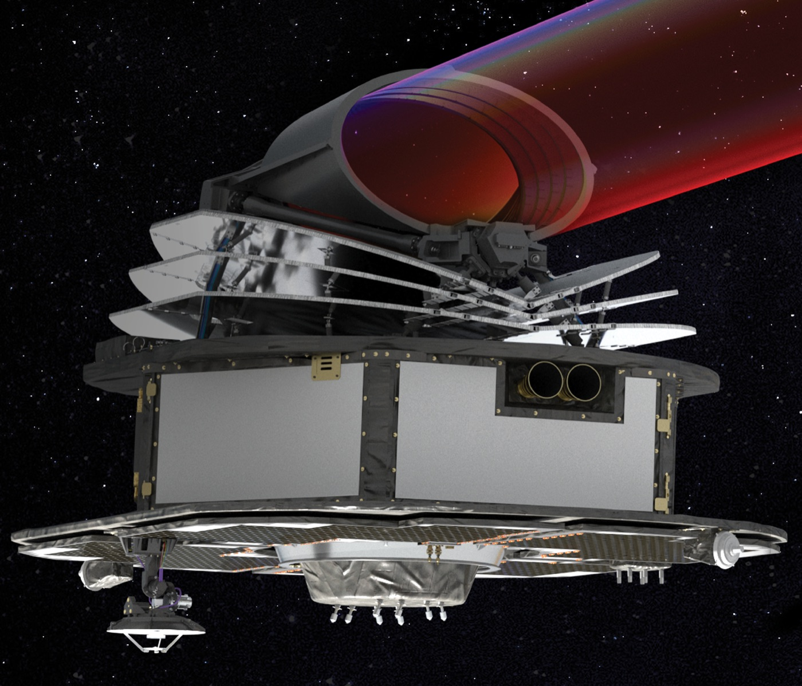

Executive Summary
데이터 품질 점검은 보통 학습을 시작하기 전에 끝납니다. 필터를 걸고, 라벨을 다시 보고, 이상치를 덜어 냅니다. 그런데 모델이 이미 배포됐고 정답을 영원히 볼 수 없는 현장이라면 그 점검을 어느 시점에 다시 할 수 있을까요. 8월 24일 arXiv에 올라온 논문이 그 시점을 하나 제안합니다. ESA 연구원이 공저자로 참여한 이 연구는 계외행성 대기를 관측할 아리엘 미션의 분광 파이프라인에서, 예측 하나를 놓고 그 예측을 만든 훈련 샘플을 되짚습니다.
열쇠는 영향함수의 기준을 바꾼 것입니다. 고전적인 영향함수는 어떤 훈련 샘플이 테스트 손실을 얼마나 움직이는지를 재는데, 손실을 계산하려면 정답이 있어야 합니다. 저자들은 관심의 대상을 손실에서 모델의 예측값 자체로 옮겼습니다. 그러자 정답 없이 계산되는 양이 됐습니다. 5개 교차검증 폴드에 걸친 영향력 행렬 전체가 1분 15초 만에 나왔습니다. 같은 일을 실제 재훈련으로 하면 약 24시간이 걸립니다.
다만 아리엘은 아직 발사 전이고, 이 검증은 공개 시뮬레이션 데이터셋 위에서 이뤄졌습니다. 논문이 지목하는 해로운 샘플도 확정된 판정이 아니라 고위험 기여를 표시한 깃발입니다. 저자들은 정답 라벨을 볼 수 없으므로 실제 성능 저하를 보장하지는 않는다고 명시했습니다.
주요 수치
출처: Grens 외, arXiv:2608.23458 (2026-08-24)
1분 15초
영향력 행렬 전체 계산 시간
폴드당 훈련 샘플 6,810개, 폴드 5개 전체 기준이며 같은 범위를 실제 재훈련으로 확인하면 약 24시간이 걸립니다
0.81
위험 점수와 실제 오차의 순위상관
스펙트럼 모양 오차 기준이며 크기 오차 기준으로는 0.69입니다. 정답은 이 비교에만 쓰였습니다
6배
영향력 상위 샘플의 크기 어긋남
모양은 최근접 이웃과 거의 같은데 크기 불일치는 여섯 배로 벌어졌습니다. 영향력이 큰 샘플은 닮은 샘플이 아닙니다
10개 중 6개
영향력 상위와 해로움 상위의 겹침
가시광 0.55㎛와 적외선 4.3㎛ 두 채널 모두에서 상위 10개 가운데 여섯 개가 같은 샘플이었습니다
아리엘은 정답을 볼 수 없는 채로 관측한다
아리엘은 유럽우주국이 2031년에 올리는 중형 우주망원경입니다. 프랑스령 기아나에서 아리안 6에 실려 떠나 태양과 지구 사이 라그랑주점 L2 부근의 헤일로 궤도에 자리를 잡고, 계외행성 약 1,000개의 대기를 분광 관측합니다. 유럽우주국은 이것을 화학 인구조사라고 부릅니다. 발사 질량 1,400kg에 집광 면적 0.64㎡, 관측기기 두 대를 싣습니다.

관측 원리는 통과입니다. 행성이 모항성 앞을 가로지르는 동안 별빛 일부가 행성 대기를 지나오면서 파장마다 다른 분자의 흔적을 남깁니다. 아리엘이 받는 것은 파장별 밝기 변화의 시계열이고, 여기서 대기의 투과 스펙트럼을 복원하는 단계에 머신러닝이 들어갑니다. 논문은 머신러닝이 고전적인 복원 파이프라인을 대체하는 것이 아니라 보완한다고 선을 긋습니다. 스펙트럼에서 대기 성질을 역산하는 쪽에도 머신러닝이 쓰이지만, 이 연구가 붙잡은 것은 광도곡선에서 스펙트럼을 곧바로 예측하는 쪽입니다. 아리엘의 자료 처리 단계로는 L2에서 L3로 넘어가는 구간에 해당합니다.
문제는 이 파이프라인이 채점될 수 없다는 데 있습니다. 실험실이라면 정답을 따로 재 두고 예측과 맞춰 보면 되지만, 궤도 위 관측에는 비교할 참값이 없습니다. 예측이 물리적으로 말이 되는지를 다른 방식으로 확인해야 하고, 그래서 해석가능성이 편의가 아니라 검증 수단이 됩니다.
1.1입력을 캐묻는 도구는 많고, 데이터를 캐묻는 도구는 적다
설명가능 AI라고 하면 대개 특징 귀속을 떠올립니다. SHAP이나 LIME처럼 어떤 입력 변수가 이 예측을 밀었는지 따지는 방식입니다. 논문이 향하는 곳은 다른 쪽입니다. 어떤 훈련 샘플이 이 예측을 만들었는지를 묻는 훈련 데이터 귀속입니다. 스펙트럼 하나가 이상하게 나왔을 때 알고 싶은 것은 55개 채널 중 어느 파장이 기여했는가보다, 이 모델이 어떤 관측을 보고 그렇게 배웠는가일 때가 많습니다.
가장 정직한 답은 하나씩 빼 보는 것입니다. 훈련 샘플을 한 개 제거하고 다시 훈련해 예측이 얼마나 달라지는지 보는 방식이고, 결과는 정확합니다. 대신 샘플 수만큼 재훈련이 필요합니다. 논문은 훈련이 빠른 모델에서조차 이 비용은 감당되지 않는다고 못 박아 둡니다. 영향함수는 그 재훈련을 근사로 대신합니다. 로버스트 통계에서 나와 2017년 머신러닝에 도입된 이 도구는, 훈련 샘플의 가중치를 아주 조금 올렸을 때 테스트 예측이 어느 쪽으로 움직이는지를 헤시안 역행렬을 통해 추정합니다. 1차 근사인 만큼 일반적인 비선형 모델에서는 영향력이 커질수록 참값에서 벌어질 수 있다는 단서도 함께 달려 있습니다.
그런데 고전적인 정식화에는 아리엘에서 쓸 수 없는 부품이 하나 들어 있습니다. 영향력이 테스트 손실의 변화로 정의되어 있고, 손실을 계산하려면 그 테스트 샘플의 정답이 있어야 합니다. 부호를 읽는 방식도 여기에 묶여 있습니다. 값이 양수면 손실이 늘어나므로 해롭고 음수면 이롭다는 해석은, 손실을 잴 수 있을 때만 성립합니다. 운영 중인 아리엘에는 그 정답이 없습니다.
읽기 전에 짚어 둘 조건이 하나 있습니다. 아리엘은 2031년 발사 예정이고 아직 하늘에 없습니다. 이 연구가 쓴 데이터는 2021년 아리엘 데이터 챌린지의 공개 시뮬레이션 데이터셋이며, 논문은 발사 후의 운영 조건을 가정해 지상에서 프레임워크를 미리 검증한 연구입니다. 시뮬레이션이라 정답이 존재하지만, 저자들은 그 정답을 방법 안에서 쓰지 않고 결과를 채점하는 데만 썼습니다.
기준을 손실에서 예측으로 옮기자 라벨이 필요 없어졌다
저자들이 바꾼 것은 관심의 대상 하나입니다. 훈련 샘플이 테스트 손실을 얼마나 움직이는지 대신, 모델의 예측값 자체를 얼마나 움직이는지를 묻습니다. 손실에는 정답이 들어가지만 예측에는 들어가지 않습니다. 논문은 이 전환이 새로운 모델링 가정을 들여오지 않는 개념적 이동이라고 적었습니다. 정답이 필요 없어지는 대가로 포기하는 이론적 전제가 없다는 뜻입니다.
부호를 읽는 법은 바뀝니다. 손실 기준에서 양수는 해로움이었지만, 예측 기준에서 부호는 방향만 가리킵니다. 양수면 그 훈련 샘플을 빼는 순간 예측값이 올라가고 음수면 내려갑니다. 정작 중요한 것은 절댓값입니다. 0에 가까우면 이 예측에 사실상 관여하지 않은 샘플이고, 절댓값이 크면 이 예측을 크게 흔드는 샘플입니다. 이쪽 샘플들이 검증의 대상이 됩니다. 모델의 물리적 일관성을 받쳐 주는 쪽일 수도 있고, 시뮬레이션 데이터의 인공물을 옮겨 온 쪽일 수도 있기 때문입니다.
부호가 그렇게 읽히는 데는 표기상의 손질도 하나 들어갔습니다. 고전 공식 앞에는 음의 부호가 붙는데 저자들은 그것을 떼어 냈습니다. 그래야 값의 방향이 그 훈련 샘플을 제거했을 때 예측이 실제로 움직이는 방향과 그대로 맞아떨어지기 때문입니다. 계산을 바꾸는 것이 아니라 읽는 사람을 위한 조정이라고 논문은 밝혀 두었습니다.
2.1얕은 모델을 고르자 헤시안을 한 번만 구하면 됐다
예측 모델로는 익스트림 러닝 머신을 썼습니다. 은닉층 하나짜리 신경망인데, 입력 쪽 가중치와 편향을 무작위로 뽑아 고정해 두고 출력층 가중치만 릿지 회귀로 학습합니다. 즉흥적인 선택은 아닙니다. 이 계열의 모델은 계외행성 시뮬레이션에서 딥러닝의 가볍고 빠른 대안으로 이미 검토돼 온 후보였습니다. 제곱 손실 아래에서 이 최적화는 볼록하고 닫힌 형태의 해를 가집니다. 영향함수 계산에 결정적인 것은 여기서 헤시안 행렬이 상수가 된다는 점입니다. 은닉층 활성값과 정규화 항에만 의존하므로 한 번 구해서 모든 영향력 평가에 재사용할 수 있습니다. 깊은 신경망에서 헤시안-벡터곱으로 근사해야 하는 대목이, 여기서는 정확한 한 번의 계산으로 끝납니다.
계산 자체는 세 걸음입니다. 훈련 샘플의 잔차를 구하고, 그 샘플의 그래디언트를 역헤시안에 통과시켜 파라미터가 어느 쪽으로 밀리는지 보고, 그것을 테스트 샘플의 은닉층 활성값과 내적합니다. 실험 설정은 은닉 뉴런 5,000개에 시그모이드 활성, 정규화 파라미터 1.0입니다. 데이터는 2021년 아리엘 데이터 챌린지에서 왔고 계외행성 851개의 55개 파장 채널 광도곡선입니다. 모델이 받는 입력은 스펙트럼 특징만이 아닙니다. 55개 채널에서 뽑아낸 특징 뒤에 공전주기와 통과 지속시간, 궤도 장반경과 경사, 항성의 온도와 반지름, 입사 플럭스 같은 천체물리 메타데이터를 이어 붙여 한 벌의 입력을 만듭니다. 행성마다 항성 흑점 배치 10가지와 광자잡음 10가지를 곱한 100회 시뮬레이션이 있고, 전처리를 거쳐 행성당 10개 샘플로 정리됩니다. 교차검증은 5겹이되 같은 행성이 훈련과 테스트에 걸치지 않도록 행성 단위로 나눴습니다.
속도가 이 방법의 실무적 근거입니다. 폴드당 훈련 샘플 6,810개, 폴드 5개 전체의 영향력 행렬을 구하는 데 1분 15초가 걸렸습니다. 대조군은 실제 재훈련입니다. 저자들은 폴드당 훈련 포인트 다섯 개만 골라 진짜로 하나씩 빼고 다시 훈련시켜 봤는데, 그 다섯 개만으로 1분 5초가 나왔습니다. 6,810개 전체로 늘리면 약 24시간입니다. 운영 파이프라인에 넣을 수 있느냐 없느냐가 이 간격에서 갈립니다.
예측을 밀어 올린 샘플은 닮은 샘플이 아니었다
영향력이라는 말을 처음 들으면 자연스럽게 떠오르는 그림이 있습니다. 테스트 샘플과 가장 비슷하게 생긴 훈련 샘플들이 그 예측을 만들었으리라는 짐작입니다. 저자들은 훈련 샘플을 t-SNE로 펼쳐 놓고 특정 예측에 대한 절댓값 영향력으로 색을 입혀 봤습니다. 영향력이 큰 샘플들은 테스트 샘플 근처에 뭉쳐 있지 않고 훈련 데이터 전역에 흩어져 있었습니다. 논문은 이 그림이 예시일 뿐 정량적이지 않다고 캡션에 못 박아 두었습니다.
그래서 같은 질문을 숫자로 다시 물었습니다. 테스트 질의 하나에 대해 특징 공간에서 유클리드 거리가 가장 가까운 훈련 샘플 50개와, 절댓값 영향력이 가장 큰 훈련 샘플 50개를 각각 뽑습니다. 이웃을 재는 특징 공간에는 스펙트럼 특징뿐 아니라 앞의 천체물리 메타데이터까지 함께 들어 있고, 영향력 쪽 50개는 55개 채널에 걸쳐 평균한 절댓값을 기준으로 골랐습니다. 그리고 두 무리의 실제 스펙트럼이 예측된 스펙트럼과 얼마나 어긋나는지를 크기 기준과 모양 기준으로 나눠 쟀습니다. 테스트 시나리오 1,710개에 대해 평균한 결과입니다.
| 훈련 샘플 50개를 고른 기준 | 크기 어긋남 (RMSPE) | 모양 어긋남 (SAM) |
|---|---|---|
| 특징 공간에서 가장 가까운 이웃 | 0.1037 | 0.0309 |
| 절댓값 영향력이 가장 큰 샘플 | 0.6278 | 0.0380 |
▲ 논문 Table 1. 모양은 거의 같은데 크기는 여섯 배 어긋납니다
모양 쪽 두 값은 거의 붙어 있습니다. 영향력이 큰 샘플들도 예측된 스펙트럼의 형태는 최근접 이웃만큼 잘 맞춥니다. 크기 쪽에서 여섯 배가 벌어집니다. 이유는 영향력의 구성에 있습니다. 영향력은 테스트와 훈련 샘플 사이의 교차 레버리지와 그 훈련 샘플의 잔차 크기가 함께 결정합니다. 스펙트럼이 별로 닮지 않았더라도 모델이 그 샘플을 잘 못 맞혔다면 예측을 크게 밀 수 있습니다. 영향력 있는 샘플은 닮은꼴이 아니라, 모델이 기대고 있는 지점입니다.
3.1해로움은 판정이 아니라 깃발이다
여기서 해로운 샘플의 정의가 나옵니다. 예측값은 릿지 해의 구조 덕분에 훈련 타깃들의 가중합으로 정확히 분해됩니다. 각 훈련 샘플에 붙는 가중치가 곧 그 샘플이 이 예측에 얹은 몫이고, 이 가중치는 테스트 점과 훈련 점 사이의 교차 레버리지와 수학적으로 같은 양입니다. 논문은 이 분해를 두고 SHAP이 입력 변수에 해 주는 일을 훈련 샘플에 해 주는 것이라고 설명합니다. 앞에서 갈라 놓았던 특징 귀속과 훈련 데이터 귀속이 형태로는 여기서 다시 만나는 셈입니다. 예측 하나를 조각으로 나눈다는 뼈대는 같고, 나누는 대상이 입력 변수냐 훈련 관측이냐만 다릅니다.
그런데 몫이 크다는 사실만으로는 그 기여가 믿을 만한지 알 수 없습니다. 저자들은 회귀 분석에서 영향점을 찾을 때 쓰는 쿡의 거리를 참고해, 영향력과 그 샘플의 훈련 잔차를 곱한 절댓값을 해로움으로 정의했습니다. 모델이 크게 기대고 있으면서 정작 훈련 때 제대로 맞히지 못한 관측을 짚어 내는 지표입니다.
정의가 이렇다 보니 영향력 상위와 해로움 상위는 상당 부분 겹칩니다. 저자들은 가시광 0.55㎛와 적외선 4.3㎛를 골라 확인했는데, 물리적으로 성격이 다른 두 영역에서 모델이 어떻게 반응하는지 보려는 선택이었습니다. 두 채널 각각에서 상위 10개끼리 여섯 개가 같은 샘플이었습니다. 절댓값 영향력이 큰 샘플은 잔차가 특별히 크지 않아도 해로움 순위에서 위로 올라옵니다. 채널마다 정확히 어떤 샘플이 뽑히는지는 달라졌지만 구조적 패턴은 유지됐고, 저자들은 이를 모델이 넓은 스펙트럼 추세에 기대고 있다는 신호로 읽었습니다.
이 지표의 성격을 논문은 분명히 제한해 두었습니다. 해로운 것으로 표시된 샘플이 실제로 테스트 예측을 나쁘게 만들었다는 보장은 없습니다. 확인해 줄 정답이 없기 때문입니다. 대신 고위험 기여를 표시하는 깃발 역할을 하고, 천체물리학자가 그 스펙트럼들을 골라 들여다본 뒤 제거하거나 가중치를 낮출지 판단하게 합니다. 자동 삭제 장치가 아니라 사람의 점검을 어디로 보낼지 정하는 장치입니다.
정답 없이 매긴 위험 점수가 실제 오차를 따라갔다
되짚을 수 있게 되면 그다음 질문이 따라옵니다. 이 예측을 믿어도 되는지를 정답 없이 가늠할 수 있느냐입니다. 저자들은 영향력 값을 1차 민감도로 취급해, 훈련 샘플들의 잔차가 테스트 예측으로 얼마나 옮겨 붙는지를 계산했습니다. 여기서 보수적인 가정을 하나 둡니다. 훈련 샘플들의 오차가 서로 상쇄된다고 보지 않고 제곱해서 더합니다. 상쇄를 기대하지 않으니 점수는 실제보다 크게 나오는 쪽으로 기울고, 위험을 놓치는 것보다 과하게 잡는 편이 낫다는 판단입니다.
파장 채널마다 나온 섭동 점수는 예측 진폭의 제곱으로 나눠 정규화합니다. 같은 절대 편차라도 얕은 통과 깊이에서는 더 뼈아프기 때문입니다. 그렇게 스케일에서 자유로워진 값을 55개 채널에 걸쳐 제곱평균으로 모으면 관측 하나에 붙는 위험 점수가 나옵니다. 어느 파장에서든 크게 흔들리면 점수가 올라가는 구조입니다.
검증은 시뮬레이션 데이터라 가능했습니다. 정답이 존재하므로 실제 오차를 계산할 수 있고, 그 정답은 오직 채점에만 쓰였습니다. 위험 점수와 실제 오차 사이에 뚜렷한 단조 관계가 나타났습니다. 크기 기준 오차와는 스피어만 순위상관 0.69, 모양 기준 오차와는 0.81입니다. 모양 쪽 상관이 더 강하다는 것은 이 점수가 스펙트럼의 형태가 어긋나는 상황에 특히 민감하다는 뜻입니다. 관측 하나를 단위로 오차를 재는 이 틀 자체는 같은 연구진이 앞서 이상탐지로 분광 모델의 운영 범위를 한정해 두었던 작업을 이어받은 것입니다.
모델 하나에만 통하는 결과인지도 확인했습니다. 저자들은 ELM 300개를 순차로 쌓은 그래디언트 부스팅 앙상블에 같은 틀을 얹었습니다. 계산 효율을 위해, 그리고 축소 계수 때문에 뒤쪽 모델일수록 예측에 덜 기여한다는 점을 근거로, 앞의 30개 추정기에 대해서만 영향력을 구하고 축소 계수로 배율을 맞춰 더했습니다. 결과는 모양 기준 0.83, 크기 기준 0.69입니다. 모양 쪽이 조금 올라갔고 크기 쪽은 유지됐습니다.
근사가 진짜 재훈련과 얼마나 맞는지도 대조했습니다. 영향함수가 예측한 값과 실제로 하나씩 빼고 다시 훈련해 얻은 변화 사이에 강한 양의 상관이 나타났습니다. 방향과 상대적 크기를 제대로 잡아낸 것입니다. 레버리지가 낮은 일부 샘플은 대각선에 거의 정확히 얹혔고, 나머지는 대각선보다 가파른 직선 위에 늘어섰습니다. ELM 출력층이 순수하게 선형이라 이 어긋남은 미처 모델링하지 못한 비선형성 탓이 아닙니다. 완전히 빼 버리는 재훈련이 무한소 재가중보다 효과를 증폭시키고, 그 증폭 폭을 레버리지가 결정하기 때문입니다.
4.1어디까지가 ELM에 묶인 결과인가
속도의 상당 부분은 모델 선택에서 왔습니다. 한 번의 패스로 정확한 헤시안을 얻는 것은 ELM 출력층의 릿지 구조 덕분이고, 이 부분은 그대로 옮겨지지 않습니다. 논문이 아키텍처와 무관하다고 주장하는 것은 다른 대목입니다. 손실의 그래디언트 대신 예측의 그래디언트를 보는 전환, 잔차를 전파해 만든 오차 프록시, 영향력과 잔차를 곱해 정의한 해로움 기준입니다. 미분 가능한 모델이면 어디에나 개념적으로 적용됩니다. 깊은 신경망에서 영향력을 구하는 방법 자체는 이미 마지막 층 근사와 반복적 헤시안-벡터곱, TRAK 같은 무작위 사영으로 연구돼 있습니다. 한 번에 끝나는 정확한 계산을 내주는 대신 근사를 쓰는 셈입니다.
Editor's Note: 페블러스가 데이터 품질 현장에서 반복해 마주치는 순서가 있습니다. 품질 작업은 학습 앞에 몰려 있고, 배포 이후에는 성능 지표만 남습니다. 정답이 늦게 오거나 영영 오지 않는 현장에서는 그 지표조차 흐려집니다. 의료 판독, 산업 센서 이상탐지, 자율주행처럼 결과를 즉시 채점할 수 없는 영역이 여기 해당합니다. 이 논문이 만든 자리는 그 공백에 놓입니다. 예측 하나를 붙잡고 어떤 데이터가 그것을 만들었는지 되짚는 일이 라벨 없이, 그리고 재훈련 없이 가능하다면, 데이터 기여도는 학습 전에 한 번 정해지고 끝나는 값이 아니라 운영 내내 다시 계산되는 값이 됩니다. 아리엘은 그 질문이 가장 극단적인 형태로 나타나는 현장일 뿐입니다.
아리엘은 2031년에 발사되고, 이 검증은 2021년 아리엘 데이터 챌린지의 시뮬레이션 데이터 위에서 이뤄진 사전 연구입니다. 해로운 샘플 지목은 확정 판정이 아니라 점검 대상 표시이며, 이 연구는 유럽우주국의 계외행성 대기 분석 머신러닝 과제 지원을 받았습니다. 원문은 arXiv:2608.23458에서 볼 수 있습니다.
참고문헌
1차 소스
- 1.Grens, N., Simões, L. F., Yip, K. H., & Lueftinger, T. (2026). Traceable Spectral Inference via Influence Functions: Efficient Data Attribution and Error Proxies for the Ariel Mission. arXiv:2608.23458
학술 논문
- 2.Koh, P. W., & Liang, P. (2017). Understanding Black-box Predictions via Influence Functions. Proceedings of the 34th International Conference on Machine Learning (PMLR, Vol. 70), 1885–1894. arXiv:1703.04730
- 3.Cook, R. D. (1977). Detection of Influential Observation in Linear Regression. Technometrics, 19(1), 15–18. doi.org/10.1080/00401706.1977.10489493
- 4.Nikolaou, N., Waldmann, I. P., Tsiaras, A., Morvan, M., Yip, K. H., & Tinetti, G. (2023). Lessons Learned from the 1st Ariel Machine Learning Challenge: Correcting Transiting Exoplanet Light Curves for Stellar Spots. RAS Techniques and Instruments, 2(1), 695–709. doi.org/10.1093/rasti/rzad050
공식 문서
- 5.European Space Agency. Ariel — Atmospheric Remote-sensing Infrared Exoplanet Large-survey. esa.int